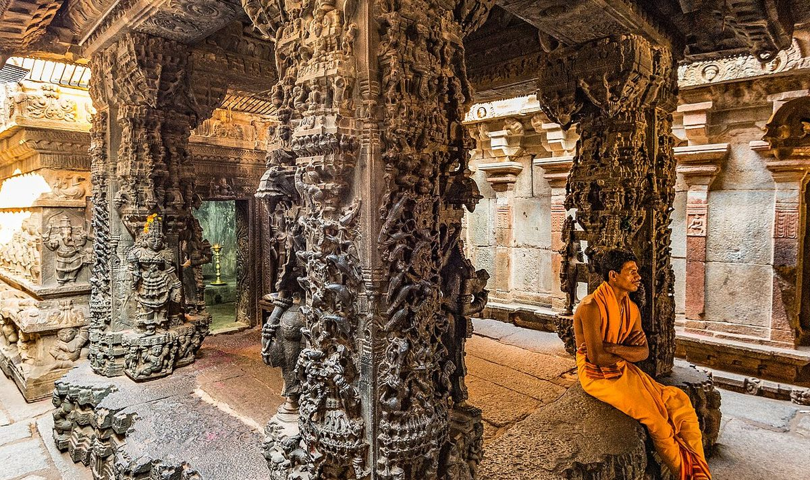

Why families choose it
Bhoga Nandeeshwara at Nandi village, Chikkaballapur district, is one of Karnataka's oldest living temples, built up over a thousand years by the Banas, Gangas, Cholas, Hoysalas and Vijayanagara kings. Its Vasantha Mantapa was carved for the celestial wedding of Shiva and Parvati, with black-stone pillars of dancers and yalis, and the stepped Shringeri Teertha kalyani behind the temple is the setting families remember when it is lit with lamps at dusk. It is about 25 km from Kempegowda International Airport, which makes it the obvious choice when guests fly in from across India or abroad, and it is open to guests of any faith who follow the dress code.
The rules inside
The temple is a monument of national importance under the ASI as well as a living temple, so conditions are strict and are set per booking by the temple office:
- Décor is flowers and fabric only, with nothing fixed, nailed or tied to the stone.
- No chairs, no pandals, no fire except ghee lamps; the homa happens elsewhere.
- Photography inside is restricted; a 2020-era answer describes no videography, and shoot vendors have at times reported the temple closed to weddings and pre-wedding shoots altogether.
- The feast is not held in the temple: meals go to the Samudaya Bhavan or to your resort.
- Hindu arranged marriages, parents present, the standard document dossier.
Third-party pages contradict each other on whether weddings are currently being accepted, with one planner describing bookings through the temple office with three to six months' notice and another stating weddings are "not allowed at present under ASI maintenance" (Panigrahana; GoTirupati). That is exactly why we do not take a Nandi Hills booking on the strength of a website, including our own.
Booking and availability
Bookings are made at the temple office, in person, with the muhurta and documents. There is no online booking and no published tariff; the only figure circulating online is a nominal enrolment fee with the temple's priest included, which we treat as unverified. Written clearance from the ASI Bengaluru Circle has historically been required alongside the temple's and the local police's consent. Availability moves with conservation work, so the first thing we do for any family is get the office's position in writing for the specific dates.
How we plan it
Because the airport is close, most families stay at the resorts around Nandi Hills and Devanahalli and hold the pre-wedding rituals, the homa and the reception there, with Bengaluru events the day before for city guests. The temple visit is the main rite at the muhurta in the Vasantha Mantapa, with flowers and lamps, followed by the kalyani at first light or at dusk for the family's photographs where the office permits. Guests then return to the resort for the feast on banana leaf. Elders are driven to the temple gate; the walk inside is short and level.
Questions
How far is Bhoga Nandeeshwara from Bengaluru airport?
About 25 km by road, roughly 45 minutes. From central Bengaluru it is about 60 km. Nandi Hills resort stays are 10 to 20 minutes away.
Can we decorate the mantapa?
With fresh flowers and fabric only, and nothing may be fixed to the stone. We work with jasmine, marigold, mango leaves and brass lamps, and keep the structural décor for the resort.
Is the temple open to non-Hindu guests?
Yes, as visitors who follow the dress code. The wedding itself is a Hindu rite for a Hindu couple, as at every temple we work with.
What if the temple is closed to weddings for our dates?
We find that out before you commit to anything. If it is closed, we propose the nearest living temples under the endowment department around Bengaluru and Chikkaballapur, keep the resort plan, and bring the family to Bhoga Nandeeshwara for darshan and photographs.